These images show the strangeness of the world. They show odd moments that people rarely notice. They show those 'misaligned' moments.
“I especially like photographs that show the strangeness of the world on visual, emotional, psychological, sociopolitical, and cultural levels.” — Alex Webb
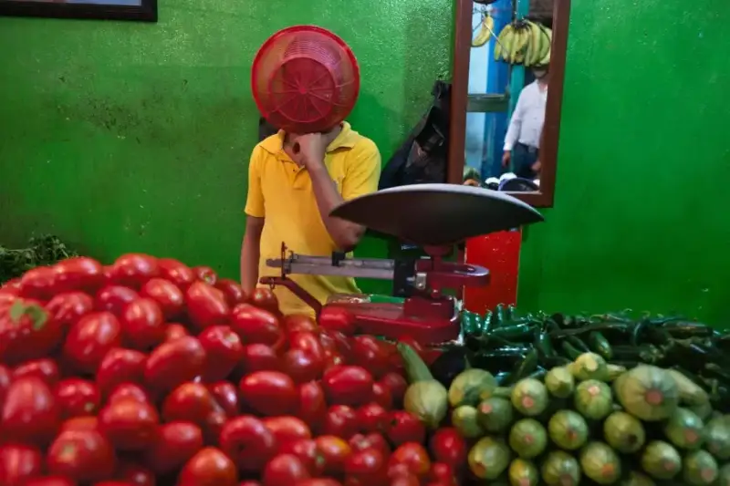
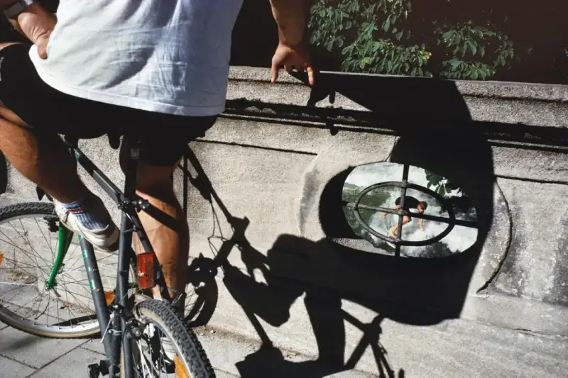
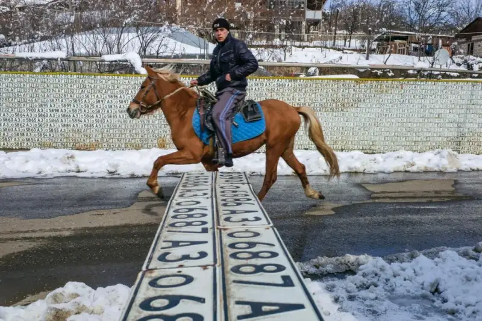
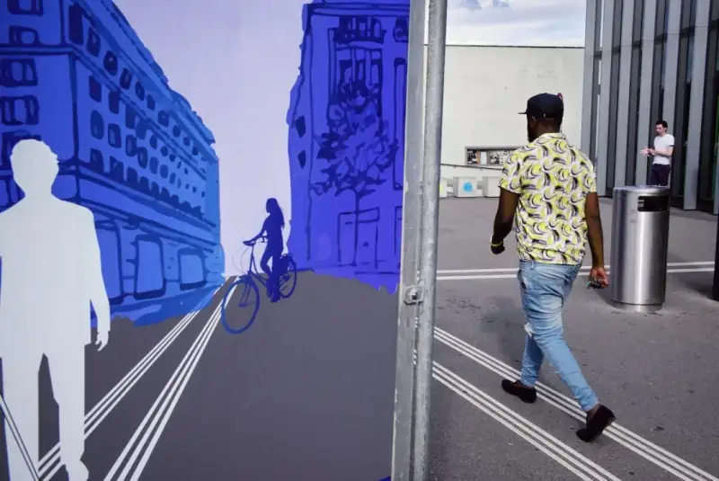
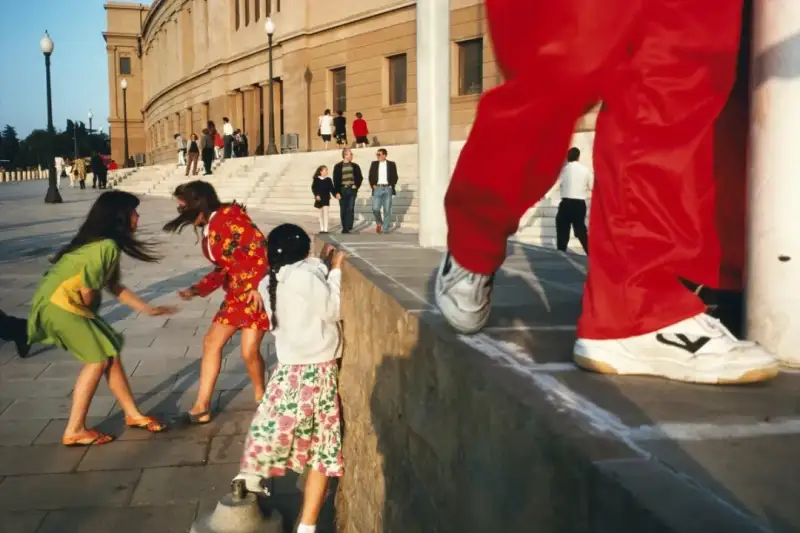
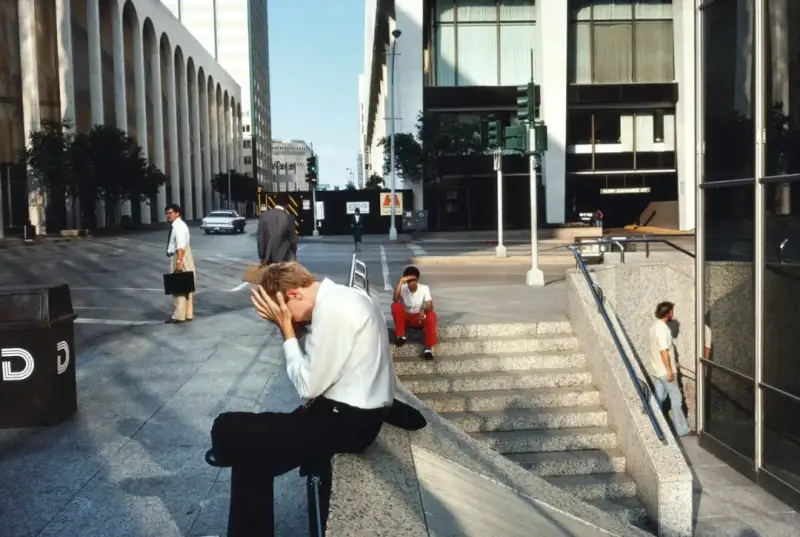
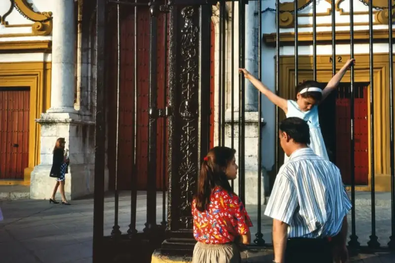
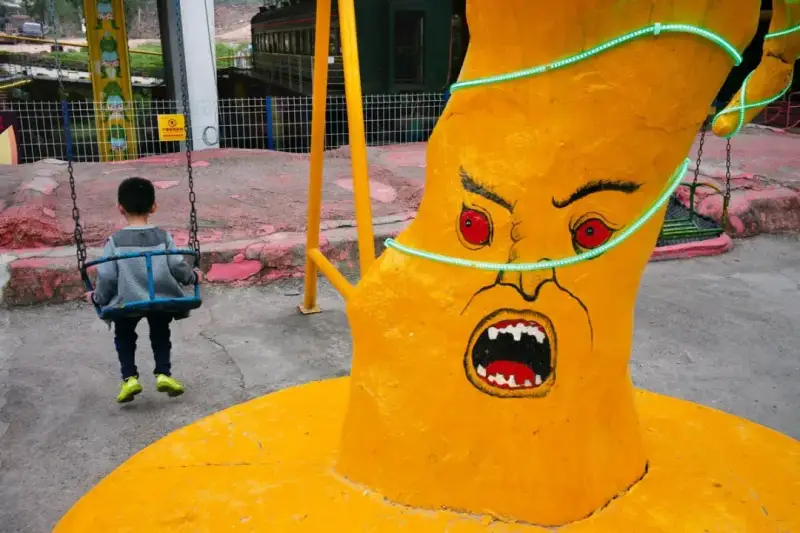
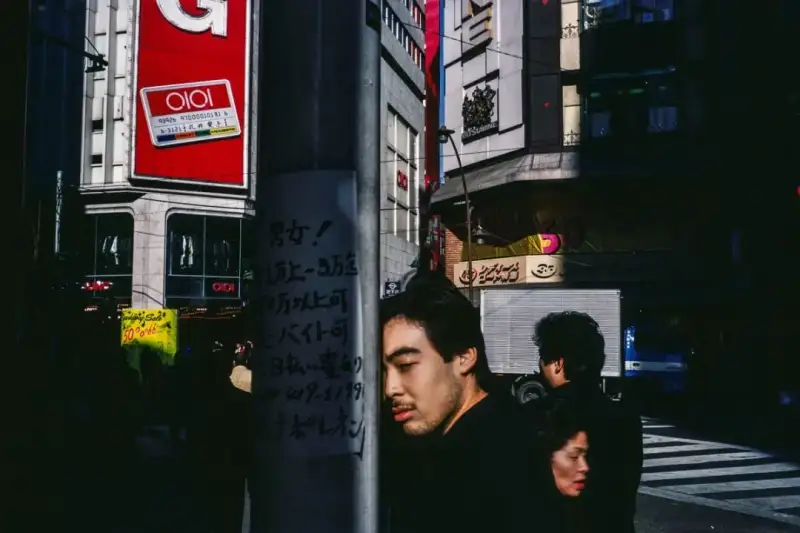
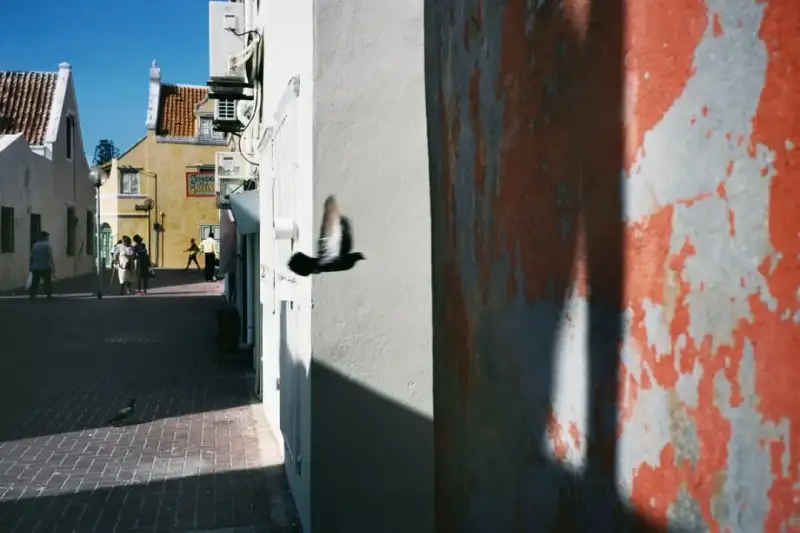
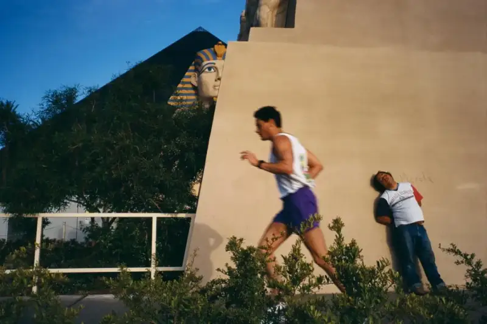
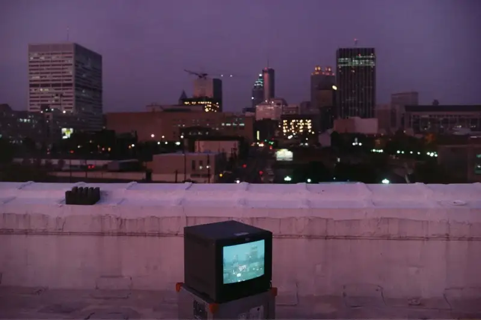